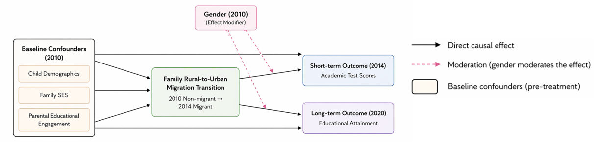
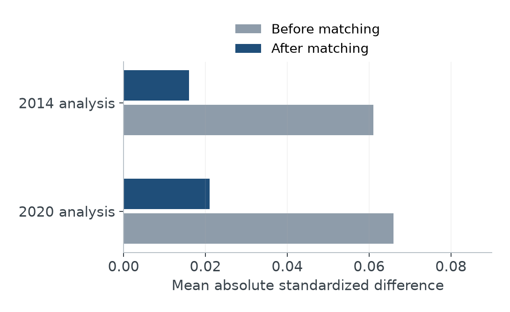
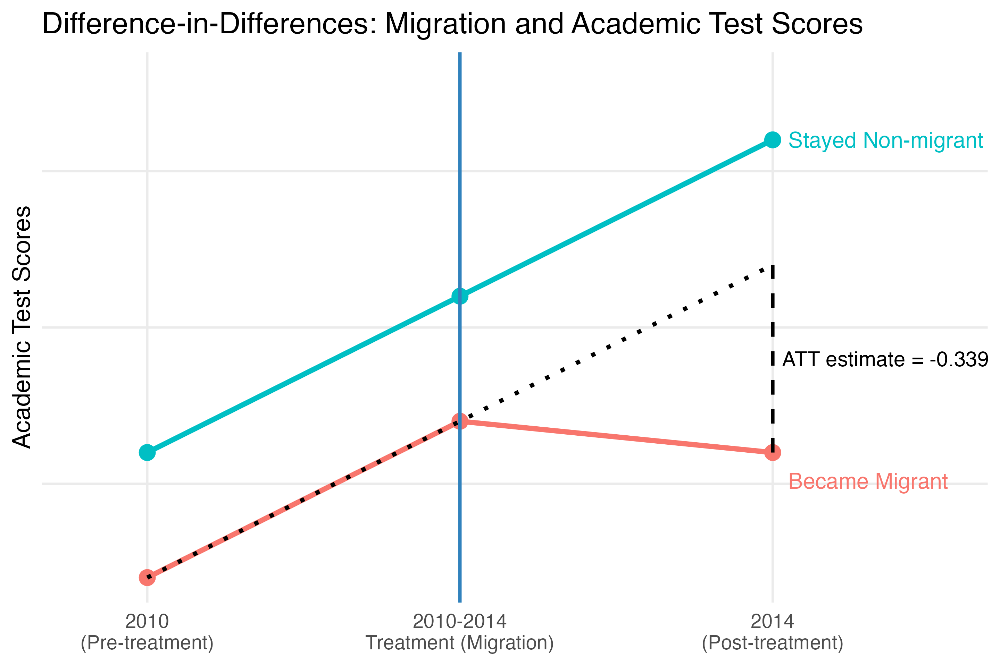
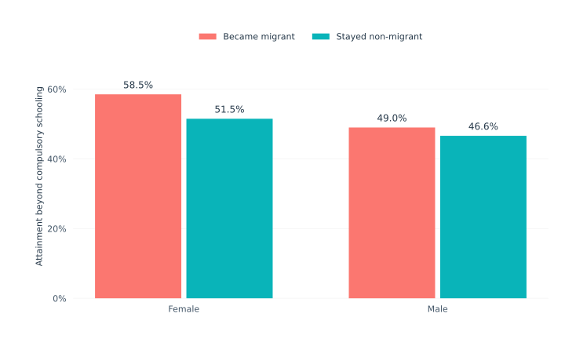
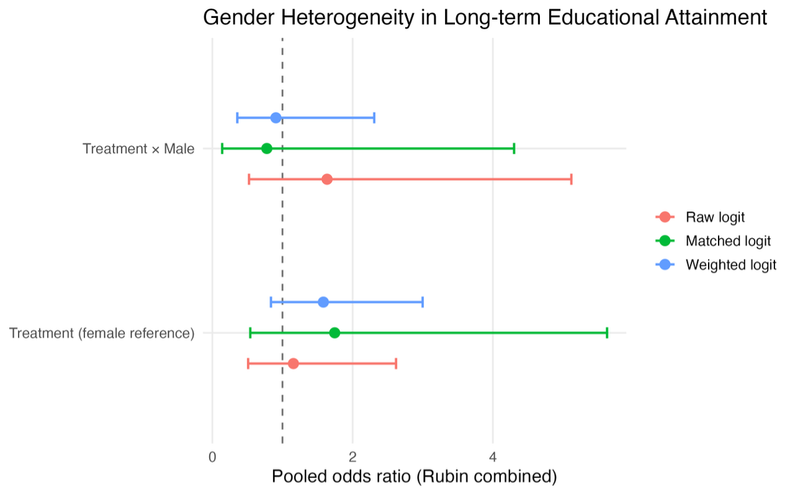

Moving to the City, Changing Educational Trajectories
Rural-Origin Children in China
Moving with a family can open access to urban resources while disrupting school and social ties. This project follows rural-origin children across three waves of the China Family Panel Studies, examining two time horizons of educational change. The short-term educational outcome, referred to in the project as 'Academic Test Scores,' is based on parental ratings of children's mathematics and Chinese performance on a 1–4 scale.
Two time horizons of educational change
Urban resources and the disruption of established routines suggest competing expectations for children who move. Household registration can also limit access to urban institutions. This study asks whether rural-to-urban migration is associated with an immediate academic disadvantage and with different educational attainment several years later.
Parent-rated performance and reaching upper-secondary education capture distinct dimensions of a trajectory. A later attainment difference need not reverse an earlier change in performance.
The comparison starts with children of the same rural origin, rather than comparing migrants with urban-born children whose circumstances were already different before migration. It focuses on children who move into urban residence while retaining rural hukou (户口, hù kǒu). This separates becoming a migrant from simply being observed as a migrant, and makes the pre-move baseline central to the research question.
An origin-based comparison matters because urban-born children begin with different institutional and family circumstances. Xu and Xie (2015) motivate comparing children who migrate with children from the same rural origin. The present study follows that logic while separating a near-term performance measure from later attainment.
hukou and the rural–urban educational divide
The household-registration system historically distinguishes rural and urban statuses, linking access to welfare, schooling, and other public resources to registration as well as residence (Chan & Buckingham, 2008). Research on educational stratification connects rural registration to cumulative disadvantage across children’s trajectories (Hao et al., 2014). Lower household educational investment and unequal parental and school resources further help explain the rural–urban divide (Zhang et al., 2015).
Moving physically to a city therefore need not remove institutional disadvantage. Rural-origin children may retain rural hukou while facing barriers to urban public schools or attending segregated migrant schools (Chen & Feng, 2013; Xiong, 2015). The treatment considered here is precisely this distinction: children start as rural, non-migrant residents, later live in urban areas, and retain rural registration. It is geographic migration without a simultaneous conversion to urban hukou status.
The resource channel suggests that migration can raise household income and expand access to schools, tutoring, and improved study conditions. Evidence on migration and rural poverty in China supports considering household resources (Du et al., 2005); research on remittances and schooling in El Salvador provides a related, but institutionally distinct, example of the income–education connection (Cox Edwards & Ureta, 2003). Additional income need not translate fully into better schooling where access remains restricted.
The competing disruption channel concerns interrupted school routines, peer networks, family arrangements, and adaptation to a new educational setting. Liang and Chen (2007) connect migrant children’s initial enrollment disadvantages to the duration of urban residence, while Xiong (2015) emphasizes institutional limits on educational mobility. These accounts motivate examining different time horizons: adjustment costs may appear quickly, while resource gains and school access may evolve more slowly. They are competing theoretical mechanisms, not measured causal mediators in this analysis.
Following rural-origin children from 2010
The China Family Panel Studies (CFPS) is a national longitudinal survey run by the Institute of Social Science Survey at Peking University. It follows individuals, families, and communities, covering education, migration, and family circumstances. Repeated observations make it possible to establish children’s rural origins before a move and follow educational outcomes at two later stages.
This analysis uses the 2010, 2014, and 2020 waves. At baseline, children are aged 6–11, hold rural hukou, live in rural areas, and are non-migrants. The migration group retains rural hukou but lives in urban areas by 2014; the comparison group remains rural and non-migrant. The short-term sample contains 1,592 children, including 172 migrants. The 2020 sample contains 902, including 102 migrants.
The measure labeled Educational Outcomes (Academic Test Scores) averages the two parental subject ratings, from poor (1) to excellent (4). Later attainment distinguishes high school or vocational education and above from junior-secondary education and below. Respondents are aged 16–21 in 2020, so some are still completing their education.
Stable personal identifiers link children across waves, including their transition from child to adult questionnaires by 2020. Parental records supply baseline family characteristics. Following individuals rather than relying only on household identifiers is important because household membership can change after migration. The waves therefore connect an initial primary-school period to later secondary and post-compulsory educational stages.
Comparing children before and after a move

View full-size figure
{kind=link}
Propensity-score matching uses baseline demographic and family characteristics, including parental education and occupation, income, educational spending, and parental engagement. Short-term models combine matching with difference-in-differences; later attainment uses logistic models. Estimates are pooled across 15 multiply imputed datasets, with weighting as a sensitivity check.

View full-size figure
{kind=link}
Matching improves balance on measured characteristics. Unobserved selection and time-varying family shocks may remain. With one pre-migration observation, parallel trends cannot be directly tested.
Parental educational engagement enters through separate baseline behaviors, including discussing school and checking homework. Combining the items yielded only modest internal consistency, with mean Cronbach’s alpha around 0.52 across imputations. Keeping the items separate avoids treating different forms of involvement as interchangeable measures of a single trait.
The methods address different comparisons. Matching seeks similar measured starting conditions; differencing compares changes and removes stable individual differences. The balance figure checks the first task, not the parallel-trends assumption needed for the second. Later attainment is observed at one follow-up horizon, so its logistic comparison does not use the same before-and-after identification as the short-term model.
A negative short-term pattern
For Educational Outcomes (Academic Test Scores), the main matched DiD treatment estimate is −0.339 points on the parent-rating scale, consistent with an initial academic disadvantage following migration. The negative direction persists across the imputed datasets and a weighting specification. School adjustment is one possible explanation, but the comparison does not isolate that mechanism.
Female is the reference category in the gender-interaction model, so the treatment coefficient describes the migration association for girls. The Treatment × Male coefficient is −0.092 (p = .584), providing no clear evidence of a gender difference. The −0.339 coefficient should not be interpreted as a pooled, gender-neutral ATT in this specification.

View full-size figure
{kind=link}
Both groups’ ratings rise between 2010 and 2014. The negative estimate describes the migrant group’s smaller improvement relative to the comparison trend, rather than an absolute fall in its average rating. The dotted counterfactual shows the trajectory implied by applying the non-migrant change to the migrant baseline; it is an assumption-based comparison, not another observed group.
Later attainment remains uncertain
Descriptively, attainment beyond compulsory schooling is higher among migrants: 58.5% versus 51.5% for females and 49.0% versus 46.6% for males. These group proportions do not by themselves identify adjusted migration effects.

View full-size figure
{kind=link}
The adjusted evidence is much less precise. In the matched model, the migration odds ratio for the female reference category is 1.745, with a 95% interval of 0.541–5.628. The male interaction is also imprecise; neither a later benefit nor a gender difference is established.

View full-size figure
{kind=link}
The descriptive and adjusted figures answer different questions. The bars summarize who reaches the attainment threshold in each group; the logistic models compare children after accounting for baseline characteristics. The wide intervals allow substantially different magnitudes and directions of association. An inconclusive interaction likewise does not establish that boys and girls experience identical educational consequences.
Adjustment and attainment are different outcomes
Parent ratings may also capture reporting differences, and selective attrition can affect the comparison. Following comparable achievement measures alongside school transitions would help distinguish temporary adjustment from lasting educational disadvantage.
Access to urban resources and disruption of school routines remain plausible competing accounts, but neither is directly measured as a mediating pathway. The different outcome measures also prevent the later comparison from establishing recovery from the earlier disadvantage. A clear short-term relative disadvantage can therefore coexist with uncertainty about eventual attainment without the two findings contradicting one another.
References
Chan, K. W., & Buckingham, W. (2008). Is China abolishing the hukou system? The China Quarterly, 195, 582–606. https://doi.org/10.1017/S0305741008000787
Chen, Y., & Feng, S. (2013). Access to public schools and the education of migrant children in China. China Economic Review, 26, 75–88. https://doi.org/10.1016/j.chieco.2013.04.007
Cox Edwards, A., & Ureta, M. (2003). International migration, remittances, and schooling: Evidence from El Salvador. Journal of Development Economics, 72(2), 429–461. https://doi.org/10.1016/S0304-3878(03)00115-9
Du, Y., Park, A., & Wang, S. (2005). Migration and rural poverty in China. Journal of Comparative Economics, 33(4), 688–709. https://doi.org/10.1016/j.jce.2005.09.001
Hao, L., Hu, A., & Lo, J. (2014). Two aspects of the rural-urban divide and educational stratification in China: A trajectory analysis. Comparative Education Review, 58(3), 509–536. https://doi.org/10.1086/676828
Liang, Z., & Chen, Y. P. (2007). The educational consequences of migration for children in China. Social Science Research, 36(1), 28–47. https://doi.org/10.1016/j.ssresearch.2005.09.003
Xiong, Y. (2015). The broken ladder: Why education provides no upward mobility for migrant children in China. The China Quarterly, 221, 161–184. https://doi.org/10.1017/S0305741015000016
Xu, H., & Xie, Y. (2015). The causal effects of rural-to-urban migration on children’s well-being in China. European Sociological Review, 31(4), 502–519. https://doi.org/10.1093/esr/jcv009
Zhang, D., Li, X., & Xue, J. (2015). Education inequality between rural and urban areas of the People’s Republic of China, migrants’ children education, and some implications. Asian Development Review, 32(1), 196–224. https://doi.org/10.1162/adev_a_00042